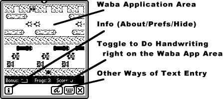
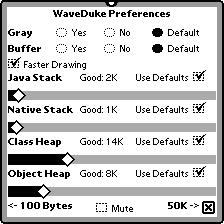

Download the following files. Waba apps require the Waba VM and the class libraries.
| Distribution |
Version |
Description |
Download |
| Waba VM |
4 (Beta) |
The Waba Virtual Machine (136K) |
WabaVM.pkg.sit or...WabaVM.pkg |
| Waba, Waba Extras, and Newton Class Libraries |
Waba.pkg is required by all Waba apps. Some apps require the other libraries (~115K total) |
WabaLibraries.sit |
|
| Waba Application Suite |
A collection of Waba applications for your enjoyment (a few K apiece). They work with various levels of success. See Steve Weyer's Waba App Page for specific information about these and other apps. |
app_pkg.sit |
|
| Sean's Waba Applications |
Asteroids, Pac Man, Go, and SameGame are games designed for Waba for the Newton. They take advantage of screen sizes and other Newton features. | Check 'em Out! |
|
 When you launch a Waba application, you will get a Window that looks like the one on the right. Unless they are specially written for the Newton, Waba applications do not actually know they're in a Newton -- many think they're running in a Palm Pilot. Hence the Waba Application Area size: typically 160x160, the dimensions of the Palm Pilot's screen. Not all apps are this size, though. For example, Hong Kong Majong opens to full iPaq screen size on an MP2K in portrait mode.
See that weird way that Waba apps start drawing before their window exists? Kind of a Cheshire Cat effect? This is because Waba applications typically expect that when they create a window, it's created and they can immediately start scribbling in it. On the Newton, when you create a window, the window isn't made immediately, and so Newton apps generally hang around and wait until the window is ready for them. Not so Waba apps.
Waba applications usually do not understand the Newton's somewhat odd way of text entry. Instead, they generally expect to be fed keystrokes or PalmPilot graffiti input. This means that you can't just enter text in a Waba app like you can in a normal Newton app. That is, unless the Waba app was specially written for the Newton (and has provided for Newton-style entry, which most haven't). We've provided several tools for you to enter text:
Handwriting Toggle Button. Ordinarily if you move your stylus in the Waba app's drawing area, it will interpret this as strokes which are sent directly to the Waba application as mouse/stylus movements. Toggling the handwriting button lets you scribble in the window instead, which gets run through the Newton's handwriting recognizer and sent to the Waba application as keystrokes. It's a quick-and-dirty way of entering text into a Wab app. When you toggle the button, three other buttons appear, which permit you to backspace, press the space bar, and press the return key.
Alternate Key Entry. The Keyboard button pops up a menu with three key entry options: a keyboard, a small keyboard of "control keys" (up/down/page-up/page-down/menu/etc.), and a text field for entering text and sending it to the Waba app, either with or without a return at the end.
 Waba apps also come with a fairly complex preferences panel, which you will become intimately acquainted with. :-) No preferences will take effect until you close the app and restart it. The panel is shown at right, and contains the following items:
Gray. Should we tell the Waba application that we're a grayscale device (as opposed to black and white)? If the app is in grayscale, it will draw with a pseudo-WinCE look. If it is in black-and-white, it will draw with a pseudo-Palm look. "Default" means to let the Waba app decide on its own -- most decide for black-and-white. On MP120s and MP130s this switch has no effect.
Buffer. Some stupid Waba applications, mistakenly thinking they have total control over the entire screen (like on a Palm Pilot), do not redraw themselves when asked to. Other Waba applications try to snag chunks of the screen and move them to other locations. To handle these situations, you must turn on buffering. The downside of buffering is that it uses more NewtonScript heap memory, and it is significantly slower. Only turn on buffering if you have to.
Faster Drawing. To draw to the screen at arbitrary times, a Newton application must call the DoDrawing() function, which grabs control of the screen and does cleanup afterwards. This function is expensive. If Faster Drawing is turned on, the function is only called in response to an event, such as a keystroke or a stylus movement. If Faster Drawing is turned off, the function is called for each and every separate item drawn -- lines, circles, text, etc. Normally you'd want this box checked, it's much faster. A few applications seem to behave better if it's not checked, however, particularly applications which for one reason or another pop up a separate window.
Java Stack, Native Stack, Class Heap, Object Heap. These four sliders let you control the amount of memory Waba will allocate for the Java and Native Stacks, and the Class and Object Heaps, internal memory items which Java applications need in order to run. If you click "Use Defaults", the values will revert to their default states (even if they don't appear to). The default states are listed with the "Good:" values. If a Waba application needs more stack or heap space than you had allocated for it, it will quit and ask you to increase that space. Uncheck the defaults for that item and increase the slider a little. Don't increase it more than you have to! Smaller-memory Waba apps are much better Newton neighbors with their NewtonScript counterparts. The minimum size is 100 bytes; the maximum size is 50K bytes.
Mute. A few Waba apps are noisy. Clicking this button will shut them up.
Waba apps use up C++ memory, not NewtonScript Heap memory. Many other Newton functions require this memory; thus sometimes running a Waba app will cause other things to not work right. For example, it's not uncommon for large windows to hang your Newton when you try to close them, if you're running a Waba app. It's also not uncommon for it to take a long time to move a window. For more information, see the Waba Known Bug List.
A few Waba apps also create catalogs (Soups) in your storage. When you delete your Waba application for good, be sure to delete the soup as well.
Many stupid Waba apps are hard-coded to assume that they're running on a Palm Pilot, with Palm Pilot fonts and metrics. This means that they may not quite draw text or lines exactly correctly, because we can't precisely emulate Palms bug-for-bug..